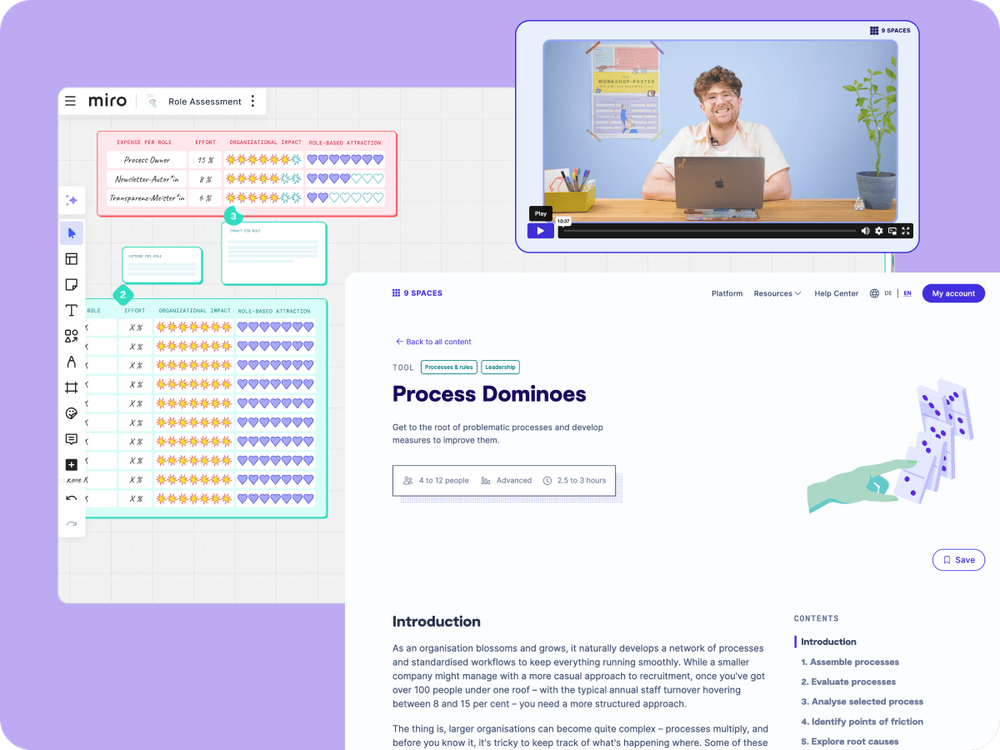

Business
5+ seats
Access for multiple team members within a tailored plan
Whether it’s a campaign launch or a product innovation, strong internal collaboration has an impact on the outside world and vice versa. With the 9 Spaces workshop platform, you can bring both together.

Here you can find out how to rethink collaboration in the consumer goods and e-commerce sector.
With more than 85 tried-and-tested workshop methods for online and in-person sessions, 9 Spaces brings structure to product development, campaign planning and internal processes.

Competitive pressure & time-to-market: As competitive pressure rises and time-to-market shortens, speed and agility become essential – yet teams often lack structure and focus.
Lack of clarity in processes & responsibilities: Cross-functional collaboration (e.g. product, marketing, supply chain) often hits a snag: Who does what? Where are the bottlenecks? What is missing for implementation?
Communication chaos & silos: Whether remote or hybrid – many teams work at cross-purposes. This slows down decision-making and campaigns.
Collaborate efficiently: Our workshop tools help you bring clarity to tasks, responsibilities and priorities, so that ideas turn into results faster.
More structure on a tight budget: With customisable whiteboards, clear workflows and tried-and-tested methods, you can get your product, brand or campaign work on track, even without a large budget or external consultancy.
Making knowledge and processes visible: Whether it’s campaign planning or a launch check-in – with 9 Spaces, you’ll learn to document decisions, bring everyone together and work fluidly and iteratively rather than flying blind.
Whether you’re developing products, improving collaboration, or planning campaigns – 9 Spaces helps you tackle the challenges you face every day.
Access for multiple team members within a tailored plan
Our team will be happy to help you and your team find the perfect solution for your organisation.